Pairing with Your Camera¶
This is the final step. Your phone forms a direct, encrypted connection to the camera, hands it your Wi-Fi details, and exchanges keys.
The app guides you through pairing in four numbered steps.
Step 1: Scan the camera QR code¶
Press Add your first camera in the System tab or ADD CAMERA in the Home tab. The app will then ask you to scan the camera QR code.

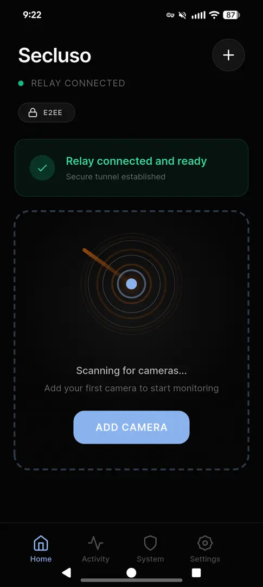
Step 2: Connect to the camera¶
The app discovers your camera over a temporary, direct link. You'll see two quick system prompts. Approve both.
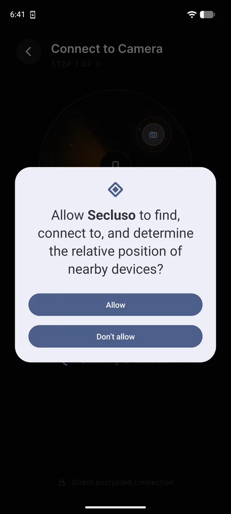
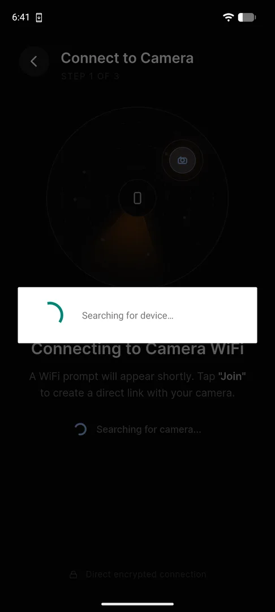
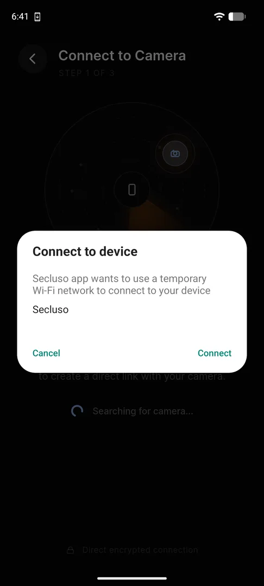
Secluso Wi-Fi.Why a temporary Wi-Fi network?
The camera briefly broadcasts its own Secluso network so your phone can
reach it directly, before it's on your home Wi-Fi. This is how the secure pairing
handshake happens.
Step 3: Enter camera and WiFi details¶
Enter a name for the camera as well as the information for your home WiFi network that the camera needs to connect to, then tap Continue.
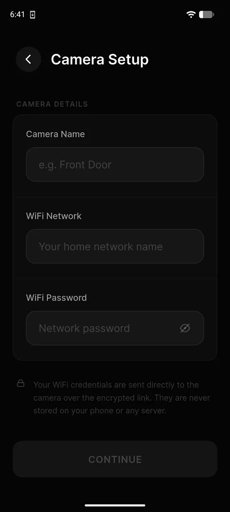
| Field | What to enter |
|---|---|
| Camera Name | A friendly label, e.g. Front Door |
| Wi-Fi Network | Your home network name (SSID) |
| Wi-Fi Password | Your home network password |
Use your everyday Wi-Fi details
Enter the network the camera should join permanently: your normal home
Wi-Fi, not the temporary Secluso network from Step 1.
Your Wi-Fi password is never stored
Credentials are sent directly to the camera over the encrypted link. They are never saved on your phone or any server.
Step 4: Pair and exchange keys¶
The app sets up encryption with the camera, progressing through three stages. Approve notifications so you can receive alerts.
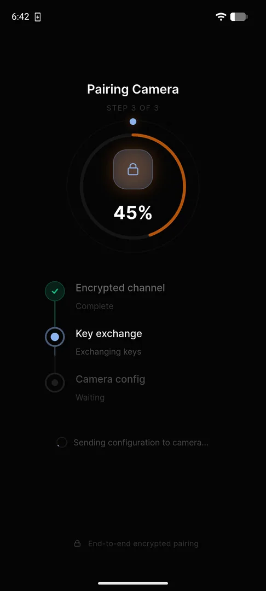
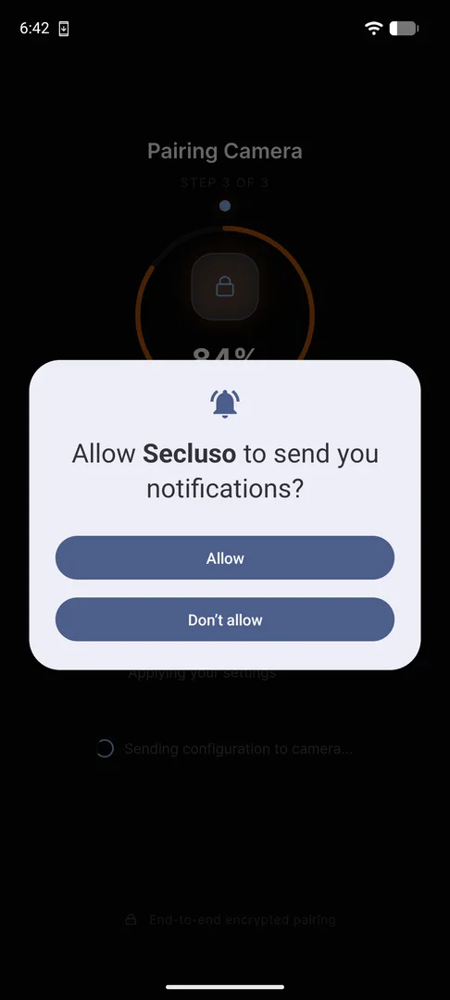
Done: camera paired¶
When pairing finishes, your camera is Connected with E2EE Active. Tap Go to Home, or Add Another Camera to repeat the process.
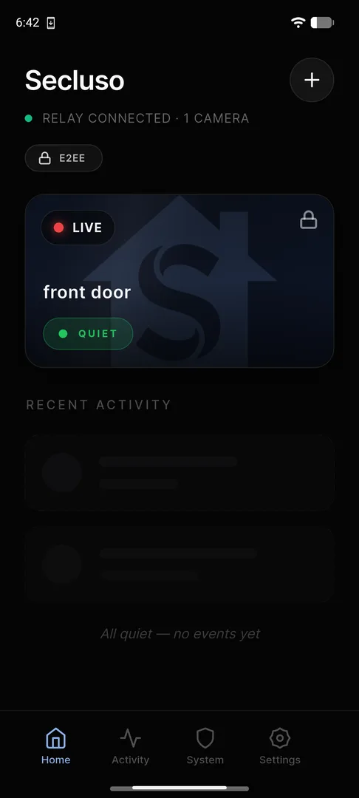
Using your camera¶
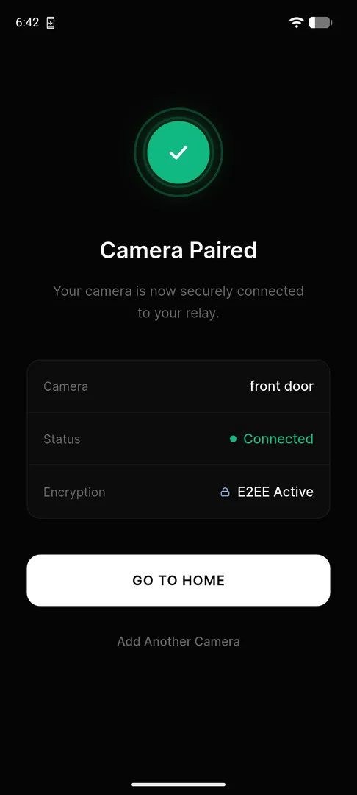
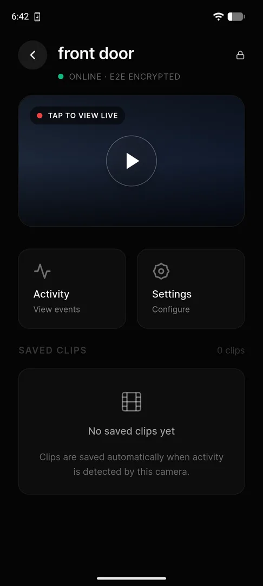
Open the Settings tab to choose your push delivery method and toggle Person, Motion, and System alerts independently.
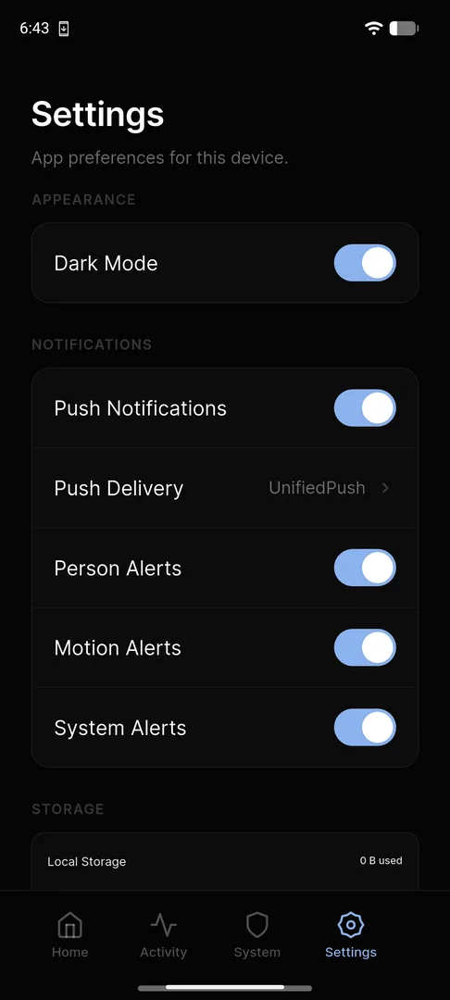
Not receiving alerts?
Make sure Push Notifications is on in Settings, that you tapped Allow on the notification prompt during pairing, and that a push delivery method is selected.